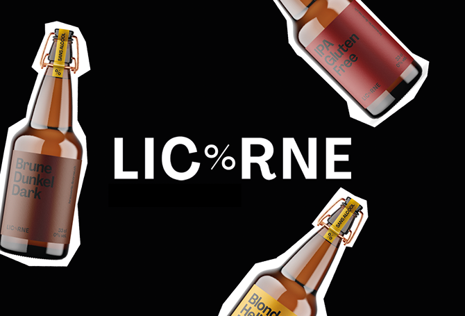
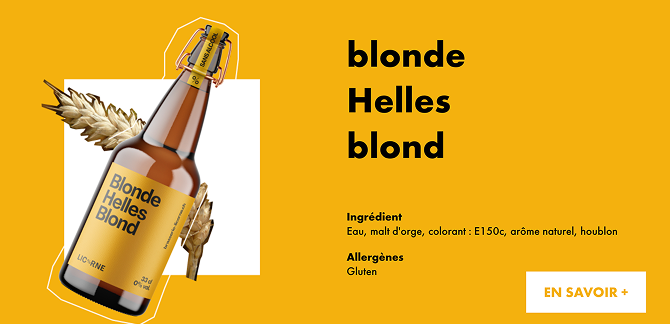
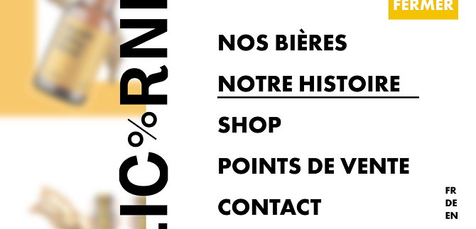

Licorne
Pour ce projet, nous avons eu 2 semaines pour faire un site web One-page et un vidéo promotionnel pour des bières sans alcool du nom Lic%rne. Nous avons reçu la présentation de la brasserie de Sylvain, l'homme derrière la marque et un focus de groupe pour mieux comprendre le public cible.
Lien du site web

Focus du projet:

